Morphology-aware precise screening
Goal: decide which voxel features are allowed to define habitats, then cluster only those features. This is not a new clustering algorithm. It is the precision screen of Prior et al. (Radiol Artif Intell 2024;6(2):e230118), taught as the same combinatorial experiments the paper ran.
Runnable gallery (atoms, paper combinations, all-vs-precise habitats):
Precise features. Volume-level atoms:
perturb_image() and
extract_voxel_texture().
What is screened
A voxel radiomic map \(F(\mathbf{x})\) is a local morphological descriptor: each voxel’s value is computed in a neighbourhood whose size is the kernel radius (and, for many features, a grey-level bin width). If that map does not survive a simulated re-acquisition, or a change of neighbourhood scale, clustering it produces partitions nobody can reproduce.
The paper’s combinations are two atoms, then a small composition:
import numpy as np
from habit.contracts import cohort_from_directory
from habit.datasets import fetch_demo
from habit.precision import perturb_image, precision_panel
from habit.voxel_features import extract_voxel_texture
# Change DATA / MODALITIES / ROI to your preprocessed layout
DATA = fetch_demo() # or "demo_data/preprocessed"
MODALITIES = ("LAP",)
ROI = "LAP"
subject = cohort_from_directory(DATA, modalities=MODALITIES, roi=ROI)[0]
image = subject.image(ROI)
mask = subject.mask(ROI)
retest_rng = np.random.default_rng(7)
noisy = perturb_image(image, method="gaussian_noise", rng=retest_rng)
shifted = perturb_image(noisy, method="translation", shift_fraction=0.5, rng=retest_rng)
perturbed = perturb_image(shifted, method="rotation", angle_degrees=0.5, rng=retest_rng)
feat_r3 = extract_voxel_texture(image, mask, kernel_radius=3, bin_width=12)
feat_pert = extract_voxel_texture(perturbed, mask, kernel_radius=3, bin_width=12)
feat_r1 = extract_voxel_texture(image, mask, kernel_radius=1, bin_width=12)
feat_b25 = extract_voxel_texture(image, mask, kernel_radius=3, bin_width=25)
repeat = precision_panel(
{"original": feat_r3, "perturbed": feat_pert}, agreement="absolute"
)
kernel = precision_panel({"R1": feat_r1, "R3": feat_r3}, agreement="consistency")
binw = precision_panel({"B12": feat_r3, "B25": feat_b25}, agreement="consistency")
repeatability — ICC(3A,1) between the base-setting maps of the original image and of one perturbed copy;
reproducibility_kernel_radius — ICC(3C,1) between maps at the given kernel radii (the paper contrasts R1 with R3) at fixed bin width;
reproducibility_bin_width — ICC(3C,1) between maps at the given bin widths (the paper contrasts B12 with B25 HU) at fixed radius.
A feature is precise when the lower confidence limit of its ICC
reaches lcl_threshold (default 0.5) in every experiment that
was actually run. identify_precise_features() is that
intersection; aggregate_panels() takes the cohort median
when you have more than one subject.
{kind=link}
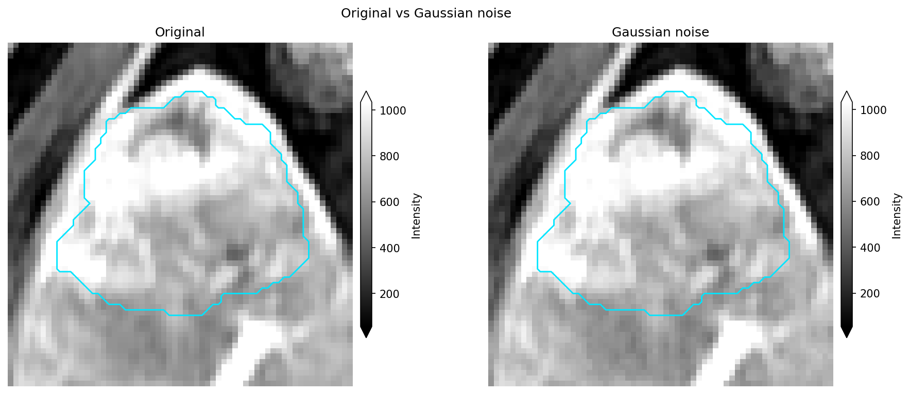
Intensity perturbation: original vs the Appendix S2 chain (Chang
noise, then 0.5-voxel translation, then 0.5° rotation)
(plot_intensity_slice()). One cropped
demo_data subject; not a clinical claim.
{kind=link}
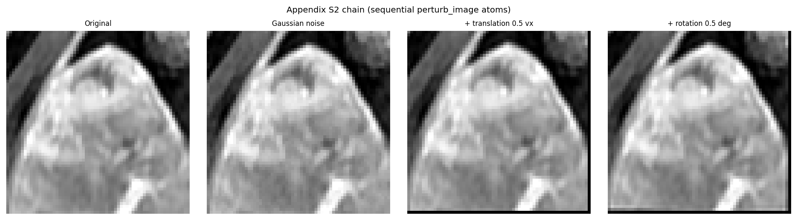
Sequential Appendix S2 atoms on one slice: original, after Chang
noise, after +0.5-voxel translation, after +0.5° rotation. Each
panel is one perturb_image() call. Geometric methods
resample back onto the original grid.
Why “morphology-aware”
Three morphological facts are built into the HABIT screen. They are easy to miss if one treats ICC as a generic correlation.
The features themselves are morphological. Kernel radius is a neighbourhood scale. The kernel-radius reproducibility experiment asks whether the spatial pattern of a feature survives a change in that scale. A feature that is precise only at one radius is not a stable habitat coordinate.
Acquisition perturbation moves anatomy. Translation and rotation are rigid morphological changes of the patient in the scanner. Noise is not morphology, but it is part of the paper’s simulated retest. HABIT can transform masks with the image (nearest neighbour) when you call the registered component on a Subject, because a shifted acquisition images a shifted patient.
Agreement is computed on the common ROI. HABIT aligns condition fields on shared ROI coordinates and drops any voxel that is NaN in any condition. The pairing is therefore the intersection of the morphologies, not a rectangular crop filled with dummy intensities.
How to apply
Work from a directory that has images in HABIT’s preprocessed layout
(demo_data/preprocessed in the gallery). One physical line per
shell command. Full copy-ready script:
Precise features.
1. Atoms. Load one image and mask, then perturb and extract:
import numpy as np
from habit.contracts import cohort_from_directory
from habit.datasets import fetch_demo
from habit.precision import perturb_image
from habit.voxel_features import extract_voxel_texture
DATA = fetch_demo() # or "demo_data/preprocessed"
cohort = cohort_from_directory(DATA, modalities=("LAP",), roi="LAP")
image = cohort[0].image("LAP")
mask = cohort[0].mask("LAP")
retest_rng = np.random.default_rng(7)
noisy = perturb_image(image, method="gaussian_noise", rng=retest_rng)
shifted = perturb_image(noisy, method="translation", shift_fraction=0.5, rng=retest_rng)
perturbed = perturb_image(shifted, method="rotation", angle_degrees=0.5, rng=retest_rng)
feat_r1 = extract_voxel_texture(image, mask, kernel_radius=1, bin_width=12)
feat_r3 = extract_voxel_texture(image, mask, kernel_radius=3, bin_width=12)
2. Combine. Build one precision_panel() per experiment,
aggregate if you have several subjects, then
identify_precise_features().
3. Publish the artefact. precise.save("precise_features.json")
writes the feature names plus the evidence panels. Another lab should
cluster the same names, not re-screen after seeing the endpoint.
4. Whitelist into a habitat spec. Place the whitelist first in
voxel_feature_preprocessors so only precise columns reach scaling
and clustering:
from habit.contracts import cohort_from_directory
from habit.datasets import fetch_demo
from habit.recipes import Study, identify_precise_voxel_features
from habit.spec import HabitatSpec, Spec
# Change DATA / MODALITIES / ROI to your preprocessed layout
DATA = fetch_demo() # or "demo_data/preprocessed"
MODALITIES = ("LAP",)
ROI = "LAP"
cohort = cohort_from_directory(DATA, modalities=MODALITIES, roi=ROI)
precise = identify_precise_voxel_features(cohort, seed=7)
whitelist = precise.preprocessor()
spec = HabitatSpec(
name="precise_habitats",
voxel_feature_extractor=Spec("raw", {"modalities": list(MODALITIES)}),
voxel_feature_preprocessors=(
whitelist.spec,
Spec("minmax", {"across_features": False}),
),
habitat_model_fitter=Spec(
"kmeans",
{"min_habitats": 2, "max_habitats": 10, "validation": "elbow"},
),
habitat_assigner=Spec("nearest_centroid"),
random_seed=11,
)
result = Study(spec).fit_predict(cohort)
{kind=link}
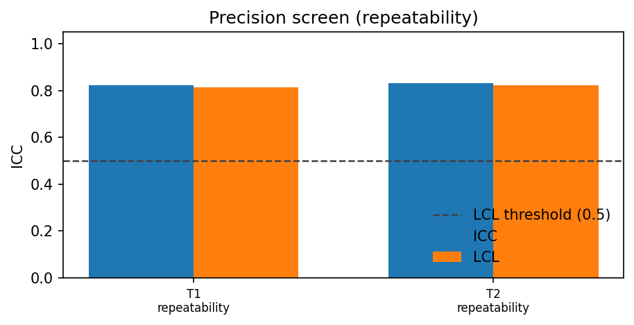
Repeatability forest plot: ICC (point) and 95% CI (horizontal
whisker) per voxel texture feature, with the 0.5 LCL threshold
(plot_precision_icc(), orientation="row").
This gallery figure is one cropped subject. Kernel / bin ICC
panels and the all-vs-precise habitat compare live on
Precise features.
{kind=link}
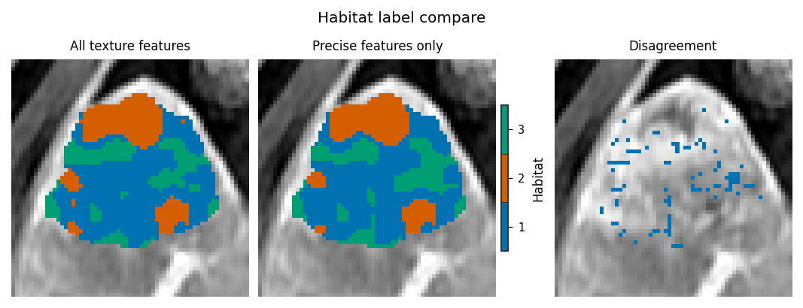
Same subject, same extractor, same k search: all texture
features vs precise features only
(plot_habitat_label_compare(),
align_labels=True).
Optional ROI-edge follow-up
The paper chain does not wrinkle the ROI. bspline_deform
(MONAI Rand3DElasticd B-spline / elastic FFD) warps image and
mask together so the contour stays paired with anatomy.
control_spacing=16 builds a coarse cubic B-spline lattice (a slow
bulge); target_dice scales that field so ROI overlap is about 0.95.
The intersection of the original and warped masks is the core
both contours still cover. Habitats are computed on each subject,
then restricted to that intersection before pairing, Dice, and
features. This is a deformable re-acquisition, not mask-only
grow/shrink. That is not Prior Appendix S2. Extra monai is
required. Copy-ready code lives on Precise features
(the # BEGIN roi_followup block). Same crop and slice for the
map figures; the ICC / difference panels use three cropped subjects.
{kind=link}
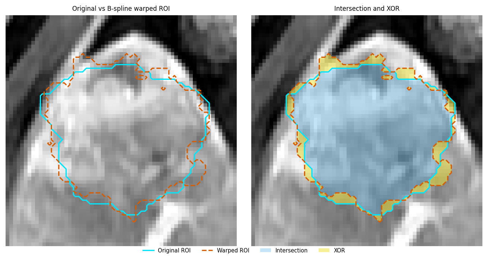
Cyan solid = original ROI; vermillion dashed = warped ROI; sky-blue fill = intersection; yellow = membership change (XOR, right panel). Same axial index as the habitat compare below.
{kind=link}
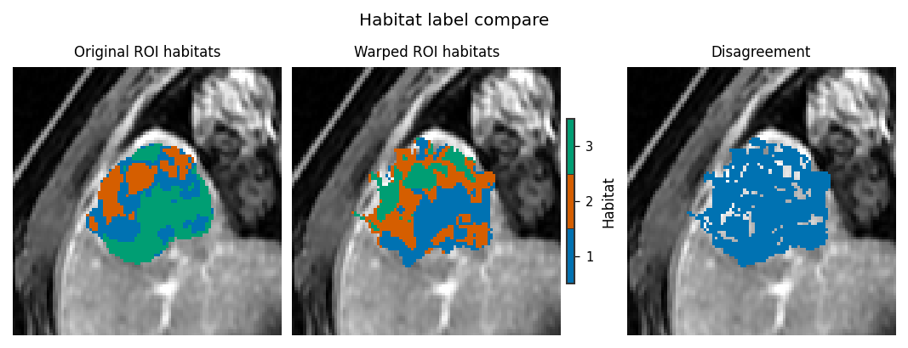
One-step habitats on the original vs warped subject, both
restricted to the intersection. Warped ids are remapped by
mean-intensity Hungarian pairing
(align_habitat_map(), method="centroid",
force=True) so the same colour is the same intensity-defined
habitat on both panels.
{kind=link}
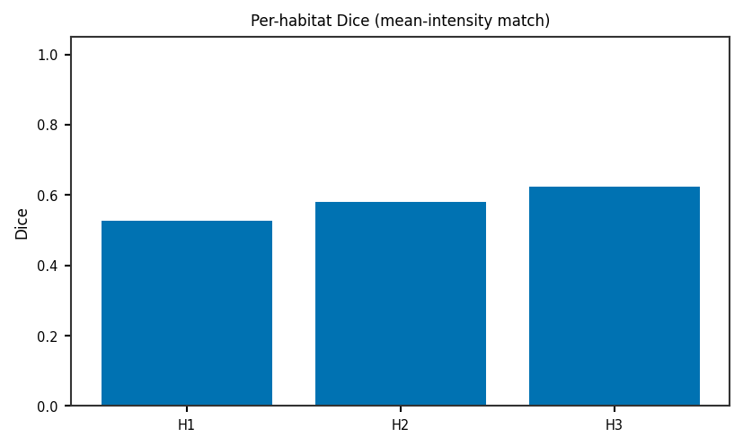
Per-habitat Dice from habitat_stability()
(method="centroid"): ordinary
\(2|A\cap B|/(|A|+|B|)\) after the same mean-intensity pairing
on the intersection.
{kind=link}
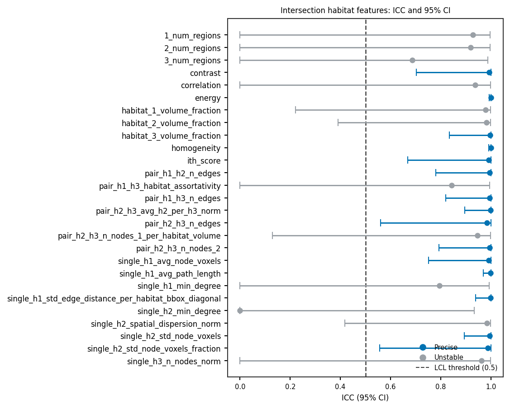
Every light habitat-map family (volume, non_radiomics, ITH,
MSI, graph) scored with ICC(3A,1) and the 95% CI on the
intersection. The gallery figure keeps the teaching columns plus
a random graph subset (random_state=0); the script still
scores every shared column. Three demo subjects, original-core vs
mean-aligned warped-core (icc3a_1(),
plot_precision_icc()). Colour is
LCL >= 0.5 only — this is not the voxel-texture
PreciseFeatureSet. Wide intervals at n=3 are expected.
{kind=link}
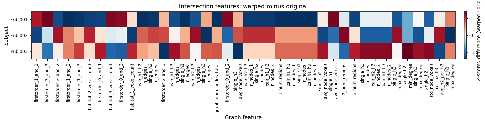
Paired difference heatmap on the same intersection tables
(warped - original; plot_graph_feature_heatmap()).
Optional contour follow-up
Mask-only operators simulate inter-rater contour variability without
moving the image. They are not Prior Appendix S2. Copy-ready code:
Precise features (contour_perturbation_demo.py).
{kind=link}
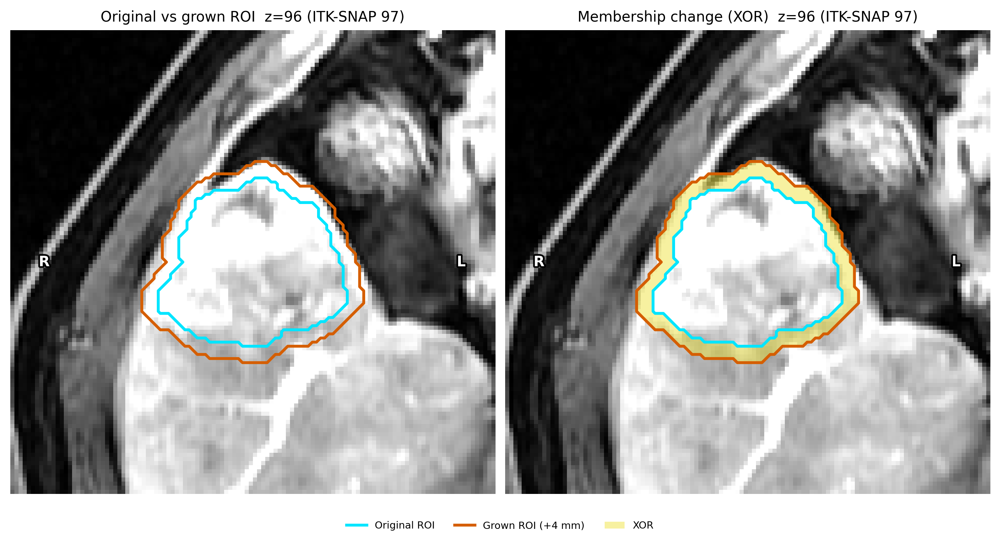
P1 grow (+4 mm): cyan solid original, vermillion solid grown, yellow XOR
(morphological / morphological_grow_shrink()).
{kind=link}
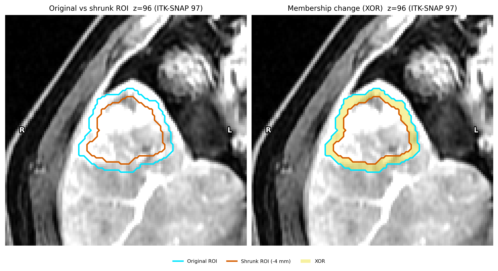
P1 shrink (-4 mm). Same kernel, negative radius.
{kind=link}
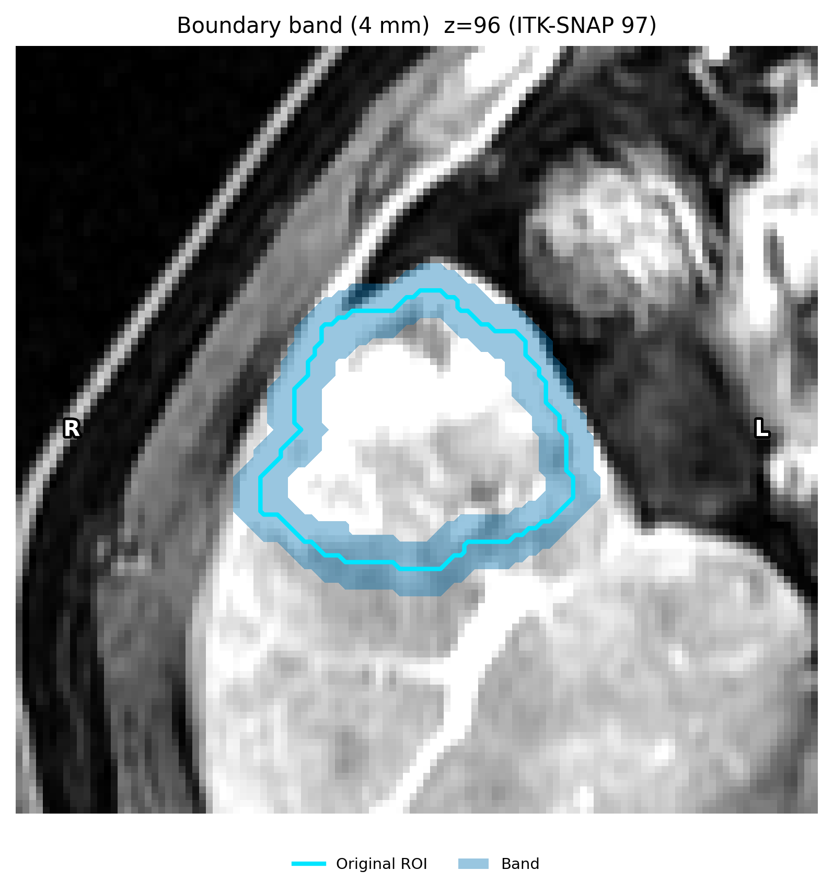
Boundary band used to localise contour edits
(boundary_band_mask()).
{kind=link}
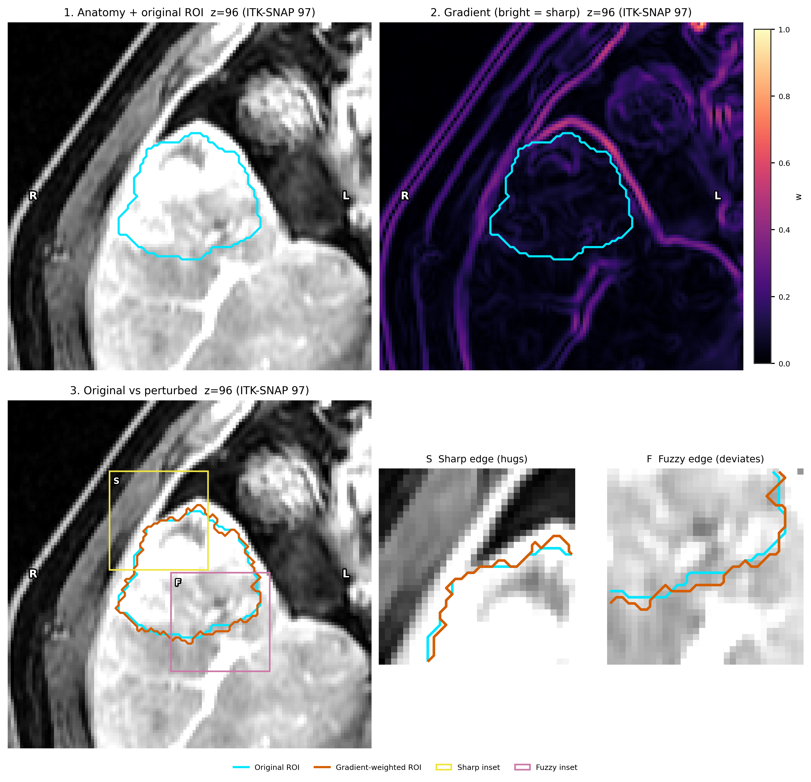
P3 teaching figure: anatomy, gradient (bright = sharp), cyan vs
vermillion solid contours, plus sharp / fuzzy insets. Flip
probability is 0.35 * (1 - w) inside a 2-voxel band
(gradient_weighted /
boundary_weighted_perturbation()).
{kind=link}
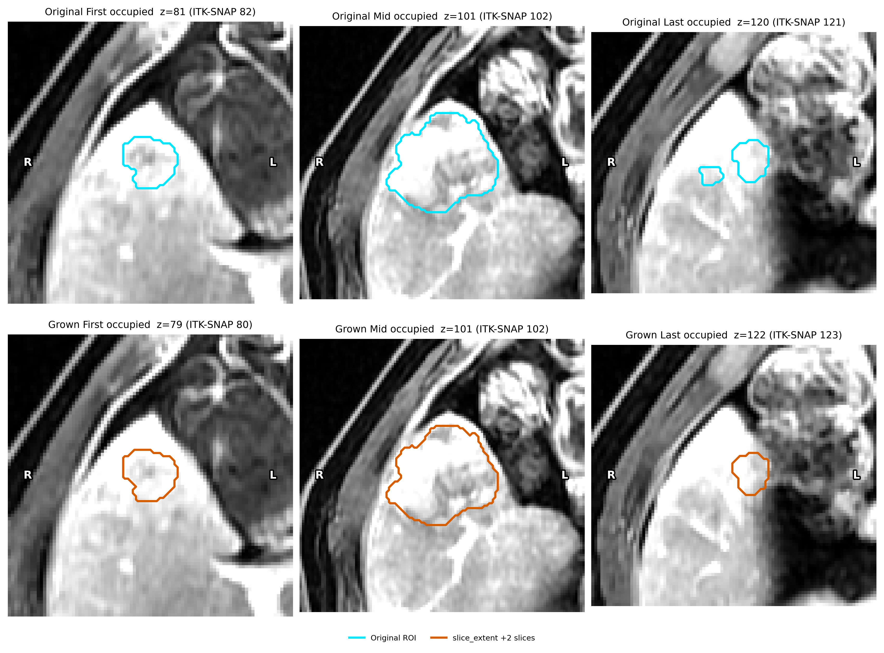
P4: first / mid / last occupied slices after grow_slices=2
(slice_extent / slice_extent_perturbation()).
Optional one-call recipe
identify_precise_voxel_features() loops the same
atoms over a cohort and aggregates by the per-feature median. Use it
when you do not want to write the three precision_panel calls
yourself. It is not required to generate a perturbation or a texture
table.
from habit.contracts import cohort_from_directory
from habit.datasets import fetch_demo
from habit.recipes import identify_precise_voxel_features
# Change DATA / MODALITIES / ROI to your preprocessed layout
DATA = fetch_demo() # or "demo_data/preprocessed"
MODALITIES = ("LAP",)
ROI = "LAP"
cohort = cohort_from_directory(DATA, modalities=MODALITIES, roi=ROI)
precise = identify_precise_voxel_features(cohort, seed=7)
What is not claimed
Not a biomarker. Passing the screen means the map is repeatable / reproducible under the stated perturbations, not that it encodes a cell type, a driver mutation, or a clinical outcome.
Not the default Precise chain. MIRP
perturbation_roi_adapt_size(morphological dilation/erosion of the mask) is not in Prior 2024 Appendix S2. HABIT implements it, plus gradient-weighted and slice-extent operators, as an optional contour follow-up (Precise features). The ROI-edge follow-up usesbspline_deform(MONAI B-spline / elastic FFD) and scores habitats only on the intersection of the two masks. Uniform grow/shrink is the separate contour section; neither is in the default Precise chain.Not leakage-proof. Screening on the same cohort that will be clustered, then testing a classifier on that cohort, is still a discovery analysis. An external test set is a different protocol.
Not a substitute for a pre-specified \(k\). Auto-selection (HABIT default: inertia elbow, \(k\in[2,10]\)) remains a modelling choice. Precise features plus an unblinded \(k\) search can still overfit.
Zeros vs missing. Absent experiments (single radius, single bin width) are skipped, not failed. Read
precise.to_frame()before claiming “all three experiments”.
References
Prior O, Macarro C, Navarro V, et al. Identification of Precise 3D CT Radiomics for Habitat Computation by Machine Learning in Cancer. Radiol Artif Intell 2024;6(2):e230118. (DOI).
See also
Gallery: Precise features
Domain API: Domain protocols and registries (
perturb_image,extract_voxel_texture,identify_precise_features)Kernels: Numeric kernels (habit.kernels) (perturbation and voxel ICC)
Clustering defaults: Habitat Segmentation Configuration